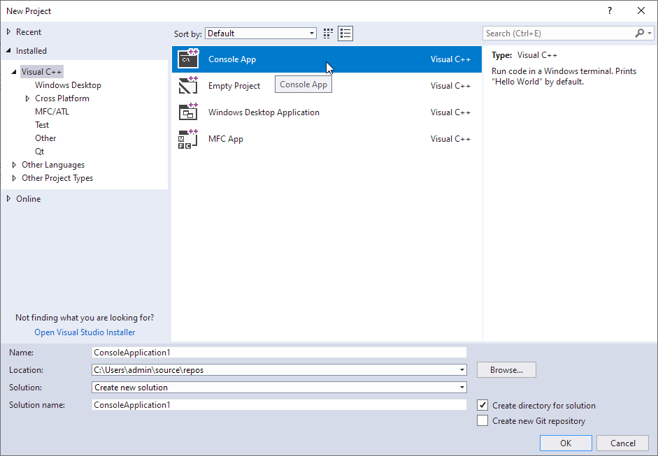

DEMO code snippets are usually a single C++/C# source code with a main function body, demonstrating how some LPW functions are called. The code snippets files are located under demo/snippets folder.
To compile and run the DEMO code snippets, you should firstly create a Visual Studio project, then add or copy the code snippets file to the project. You may also modify some in the code like the image path to a true accessible path. Then, you may compile and run the project as usual. The algorithms' results are displayed via LDisplay control in the code snippets.
NOTE: The platform of DEMOs should be exactly the same as the LPW dlls you installed and registered.
NOTE: Please make sure the LPW dlls are registered and licensed before running the DEMOs.
Create a New Visual Studio Project
Step 1 - New a Console App Project
C++
Open Visual Studio, click File -> New -> Project in the menu, create the new Console App project as the following.

C#
Open Visual Studio, click File -> New -> Project, create the Console App(.NET Framework) project as the following.
Step 2 - Add the code snippets to the project
C++
Remove the auto-generated .cpp file in the new project, right click the project and select Add -> Existing Item, browse to the code snippets file and add it to the project.
Alternatively, you may copy and paste the content of the code snippets to the auto-generated .cpp file in the new project.
Add demo/include folder to the project's C++ include confuguration.
C#
Remove the auto-generated .cs file in the new project, right click the project and select Add -> Existing Item, browse to the code snippets file and add it to the project.
Alternatively, you may copy and paste the content of the code snippets to the auto-generated .cs file in the new project.
Add the LPW libraries to the project's reference, according to the includes in the code snippets.
- RMC your C# project, click "Add Reference".
- Under COM -> Type Libraries panel, search and find LPVCoreLib (must-have) and other LPVXXXLibs according to your application, then click OK to add reference (and Interop) to them in your project.
Step 3 - Modify the File Paths
Modify the file paths in the code to be accessible, for example:
C++
ILImagePtr img(__uuidof(LImage));
if (err != LPVNoError)
return;
LPVErrorCode
This enumeration represents the type of a LPV function error.
Definition: LPVCore.idl:194
C#
LImage img = new LImage();
return;